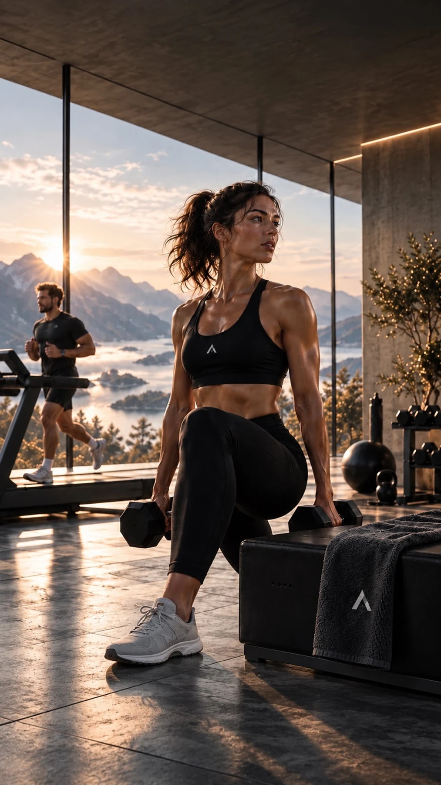

PROGRESS LIVES HERE.
Din trening.
Din fremgang.
For turen ut. For det siste settet.
For den du er på vei til å bli.
og Apple Watch
Små steg.
Større horisonter.
ÉN HELHET. DIN HVERDAG.
Trening er mer enn
tall på en skjerm.
Det er følelsen etterpå. Planen som blir en vane. Og de små forbedringene du nesten ikke legger merke til. ATHLTH samler øktene, planene og innsikten, så du lettere ser sammenhengen.
01 / FINN DIN RYTME
Din måte å trene på.
Fra første kilometer til siste repetisjon.
Plass til hele treningen din.
Finn flyten.
Flytt grensene.
En rolig tur. En ny rute. Fire drag som krever litt ekstra. Følg økten med tempo, puls og tid — og se hva du har lagt bak deg.
- Intervaller med oppvarming og pauser
- Ruter og Ghost Race
- Audio Coach underveis

BYGG VIDERE.Styrke med
en retning.
Bygg økten din, finn øvelsene og hold oversikt over sett, repetisjoner og vekter. Gi dagens innsats en plass i den større planen.
- Øvelsesbibliotek med beskrivelser
- Sett, repetisjoner og pauser
- Historikk og personlige rekorder
En plan som
passer livet.
Sett sammen løping, styrke og hvile i en uke som fungerer for deg. Bruk maler eller bygg fra bunnen, og flytt øktene når hverdagen endrer seg.
- Enkel eller avansert planlegging
- Egne økter og lagrede maler
- Oversikt over det som kommer
02 / SE SAMMENHENGEN
Innsatsen er din.
Gjør innsikten
til din også.
En enkelt økt forteller litt. Historikken forteller mer. Se treningen, dagsformen og utviklingen samlet — og bli bedre kjent med din egen rytme.
Med deg gjennom hele øktenDet du gjør, teller.
denne måneden
Dagsform
Søvn, hvilepuls og HRV gir mer kontekst til treningen.
Fremgang
Finn igjen øktene, følg utviklingen og feir personlige rekorder.
Restitusjon
Se belastningen i sammenheng med tiden mellom øktene.
03 / TIL STEDE I ØKTEN
Et blikk.
Så er du videre.
La treningen få oppmerksomheten. ATHLTH for Apple Watch gjør puls, tid og øktinformasjon tilgjengelig på håndleddet. På iPhone får du oversikten før og etter.
04 / LITT LENGER. SAMMEN.
Din fremgang.
Vår drivkraft.
Noen dager er det lettere å komme seg ut når noen venter. Finn motivasjon i venner, klubber og utfordringer. Del en økt du er stolt av — eller planlegg den neste sammen.
GREIT Å VITE
Før første økt.
Når kan jeg laste ned ATHLTH?
ATHLTH er under utvikling og testing. Vi deler informasjon om lansering og nedlasting her når appen er klar. Det er foreløpig ingen annonsert lanseringsdato.
Hvem er ATHLTH laget for?
For deg som vil samle løping, styrketrening og treningsplaner på ett sted. Enten du vil komme i gang med en god rutine eller jobbe mer strukturert mot et mål.
Hvilke enheter utvikles appen for?
ATHLTH utvikles for iPhone og Apple Watch, med Apple Health som en kilde til helse- og treningsdata. Detaljer om støttede systemversjoner kommer ved lansering.
Er dette bilder av den ferdige appen?
Nettsiden bruker ATHLTHs logo, farger og bildemateriale. Treningskortene, grafen og klokkeskjermen er illustrasjoner med eksempeldata. Funksjoner og utforming kan endres frem mot lansering.
UNDER UTVIKLING
Noe å se
frem til.
Vi bygger ATHLTH for alle stegene som kommer. Neste kapittel starter her.
Lanseringsinformasjon kommer på athlth.com.Utforsk det vi bygger